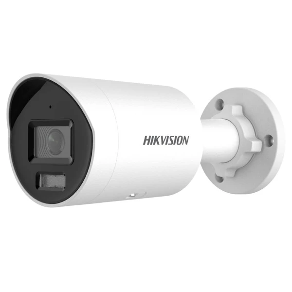

HIKVISION DS-2CD2023G2-I 2.8mm
- Matris növü və ölçüsü: 1/2.8″ Progressive Scan CMOS
- Video müşahidə keyfiyyəti: 1920 × 1080
- Çəkliş keyfiyyəti: 2 MP
- Fokus məsafəsi və çəkliş bucağı: 2.8 mm / 107°
- Gecə görüntüsü: IR
- Gecə görüntü məsafəsi: 40 m
- Hərəkət aşkarlama: Mövcuddur
- Üz tanıma texnologiyası: Mövcuddur
- Daxili mikrofon: Mövcuddur
- Su və tozdan qorunma standartı: IP67
- Ölçülər: Ø74.4 mm × 179.2 mm
- Minimal və maksimal isçi temperatur: -30°C/+60°C
- Zəmanət: 12 ay